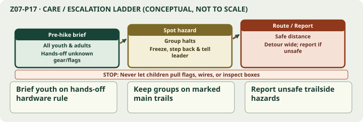

Z07-P17 · Traps and snares · New manuscript
Child and Group Safety Around Flagged Markers or Suspicious Gear
Prevent curious children and youth groups from touching unfamiliar stakes, wires, boxes, or markers in outdoor areas.
When it applies · Family hikes, youth outdoor education, and group travel on public lands.
Equipment · Pre-hike group briefing, clear visual boundaries.

Actions
- Brief children and youth groups before every hike on a simple universal rule: never touch unknown metal hardware, wooden boxes, wire loops, cables, or colorful flagged stakes in the woods or along ditches.[L09, L10]
- Keep youth groups together on designated, maintained trails and parks rather than cutting cross-country through brushy WMA ditches or culverts during autumn and winter.[L07, L10]
- Teach group members to freeze, step back to the leader, and point from a distance whenever they see unfamiliar gear or a distressed animal.[L06, L09, L10]
Failure recognition · Curious children pulling on a colorful marker wire or reaching into a wooden cubby risk catastrophic hand crush injuries.[L09, L10, L11]
Verify · Group briefing is delivered before departure and leaders maintain visual supervision on clear trails.[L10]
Stop or change course · Stop the group immediately if unfamiliar metal gear, wires, or an injured animal appear near the path; regroup safely away.[L06, L09, L10]
Evidence and editorial notes
- L06 · Minnesota DNR · Injured, Orphaned, or Trapped Wildlife Reporting (Current web edition)
- Section: Reporting injured, orphaned, or accidentally trapped wildlife · Conditions: Discovering a trapped or injured wild animal in the field
Support: Maintain safe distance to avoid bites, rabies, and stress to the animal; note GPS/location and contact a Conservation Officer or licensed wildlife rehabilitator.
Limitations: Never attempt barehanded release of distressed carnivores, raptors, or large mammals. · Conflicting evidence: None noted.
Editorial note: Establishes Z07 incidental-capture reporting protocol. · Specialist reviewer: Wildlife rehabilitator and DNR officer
Primary source · checked 2026-11-25 - L07 · Minnesota DNR · Scientific and Natural Areas Visitor Rules and Prohibitions (Current web edition)
- Section: Hunting and trapping · Conditions: Minnesota SNA and adjacent state land
Support: Verify the current rules for the precise site. Minnesota DNR lists trapping rules by SNA.
Limitations: Use separate state-park, recreation-area, and other land rules. Private permission does not supersede law. · Conflicting evidence: Conditions are recorded in the A03 audit.
Editorial note: Clarifies where bystanders/pets may encounter lawful sets. · Specialist reviewer: Public-lands manager
Primary source · checked 2026-11-25 - L09 · Minnesota DNR · Turn In Poachers (TIP) and Conservation Officer Reporting (Current web edition)
- Section: Reporting illegal, unmarked, or abandoned traps and snares · Conditions: Encountering suspected unlawful, out-of-season, or unsafe sets
Support: Do not touch, spring, or steal equipment; photograph from a safe distance with location coordinates and report to MN DNR TIP or local law enforcement.
Limitations: Tampering with lawful traps can be illegal and risks severe hand injury from stored spring energy. · Conflicting evidence: None noted.
Editorial note: Protects bystanders from injury and legal liability. · Specialist reviewer: Conservation enforcement reviewer
Primary source · checked 2026-11-25 - L10 · Minnesota DNR · Minnesota Trapping Regulations and Fur Harvest Rules (Current web edition)
- Section: Human and pet hazard recognition around lawful trapping areas · Conditions: Walking dogs or hiking in open public-use lands during furbearer seasons
Support: Keep dogs on short leashes on open multi-use lands during autumn/winter trapping seasons, avoid bait piles and shoreline culverts, and carry vet contact info.
Limitations: Body-gripping and cable devices present rapid fatal risk to unleashed pets; prevention via leashing is far safer than emergency release. · Conflicting evidence: None noted.
Editorial note: Core Z07 bystander & pet hazard prevention. · Specialist reviewer: Veterinary and outdoor-safety reviewer
Primary source · checked 2026-11-25 - L11 · Association of Fish & Wildlife Agencies · Best Management Practices for Trapping and Furbearer Welfare (Current web edition)
- Section: Conceptual classification of historic vs regulated capture categories · Conditions: Educational overview of mechanical hazard types without construction specs
Support: Historical and regulated devices fall into restraining (foothold, cage, cable restraint) and killing (body-grip) hazard classes with distinct spring-energy risks.
Limitations: Conceptual awareness supports hazard recognition only and must never include trigger dimensions, wire specs, or placement instructions. · Conflicting evidence: None noted.
Editorial note: Enforces Z07 no-actionable-construction editorial boundary. · Specialist reviewer: Safety and wildlife ethics reviewer
Primary source · checked 2026-11-25
Source lineage · New manuscript (Z07 P18 human hazards) · Classification · New manuscript.